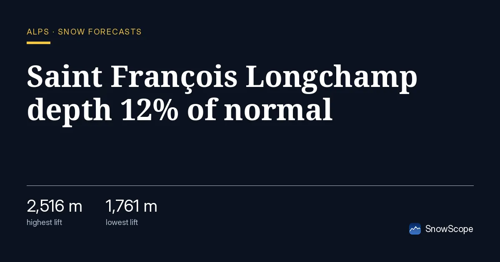
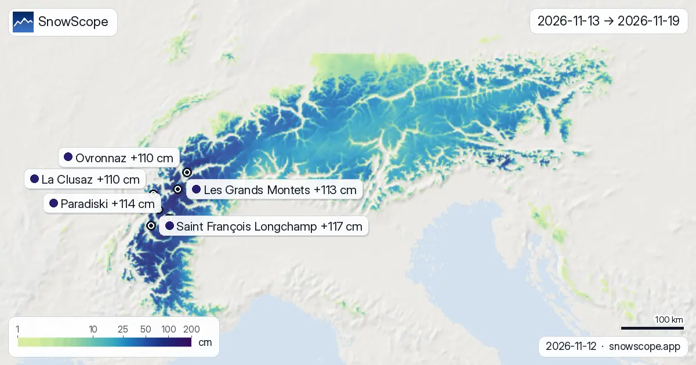
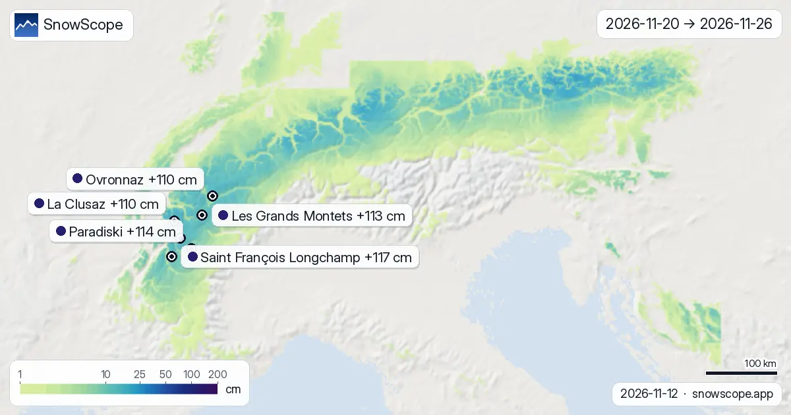

Saint François Longchamp depth 12% of normal
Saint François Longchamp sits at just 3 centimetres of snow on its mid-slopes, only 12% of the usual depth for mid-November. The autumn across the Alps has been unusually dry, leaving many resorts waiting. Our model forecasts relief: roughly 110 centimetres of new snow will reach the Alps over the next two weeks, with more than three-quarters of it falling in the first week.
See the live snow forecast for Saint François Longchamp in the SnowScope appSnow depth, powder alerts and the 3D map, free.
Starting from behind
Thin snow covers more than half the Alps today. Saint François Longchamp is not alone: only 592 of the region's 1,179 resorts have snow at all, and the total snow-covered area stands at 40,280 square kilometres. At lower elevations, bare ground is common. This deficit happens when October and early November stay too warm and dry.
The pattern shifts sharply from November 13 onwards. Two weather systems are forecast to arrive in quick succession. By November 15, the snow-covered terrain is forecast to grow to 47,080 square kilometres, a jump of nearly 7,000 square kilometres in just three days.
| Resort | Snow depth | New snow, 72 h | Coming, next days | Top |
|---|---|---|---|---|
| Saint François Longchamp | 24 cm | 18 cm | 8 cm | 2,516 m |
| Paradiski | 58 cm | 28 cm | 5 cm | 3,205 m |
| Les Grands Montets | 50 cm | 42 cm | 5 cm | 2,768 m |
| La Clusaz | 5 cm | 3 cm | 5 cm | 2,476 m |
| Ovronnaz | 77 cm | 30 cm | 4 cm | 2,456 m |
| Arêches Beaufort | 19 cm | 5 cm | 8 cm | 2,319 m |

The snowfall timeline
November 13 to 19 is when the work gets done. November 18 is the peak: Paradiski is forecast to receive 44 centimetres that day, with Saint François Longchamp, Les Grands Montets, and nearby resorts seeing 30 to 37 centimetres each. November 19 brings a second pulse: another 25 to 30 centimetres at most locations. These are the two days worth waiting for.
After November 19, snowfall drops to scattered light flurries. Week two (November 20 to 26) contributes just 7 to 14 centimetres spread over six days. By November 20, the main event is finished. For most skiers, the season-opening value is locked in by November 19.

Altitude governs the snow
Height is the key variable. Terrain above 3,000 metres is forecast to receive 62 centimetres median, with the upper models reaching 82 centimetres. Between 2,500 and 3,000 metres, the median forecast is 36 centimetres. The mid-mountain band from 2,000 to 2,500 metres gets roughly 32 centimetres.
Below 2,000 metres, snowfall drops sharply. Slopes between 1,500 and 2,000 metres will see about 28 centimetres, and terrain below 1,500 metres only 10 centimetres. This gradient matters because high ridges and shaded gullies will stay skiable longest as the temperature swings forecast for late week two melt the lower slopes.

What the two models agree on
Both ECMWF and NOAA models are forecasting similar patterns, which raises confidence in the overall timing and magnitude. The two models do differ slightly: some grid cells show lows near 87 centimetres over 14 days, others highs near 141 centimetres. But these differences are modest for a two-week forecast, and both models agree that most snow falls November 13 to 19.
One uncertainty remains: the rain-snow boundary at mid-elevations. If the air mass is warmer than forecast, terrain around 1,500 to 1,800 metres may see rain instead of snow on November 18, turning potential powder into slushy transitions. Forecasts refine as the system approaches over the next few days.
Beyond week one
November 20 to 26 is a holding pattern. Most resorts will add only 7 to 14 centimetres. La Clusaz shows 12 centimetres on November 20, then scattered single-digit gains on other days. This is the week to ski what November 19 delivered, not to expect fresh powder.
Conditions will improve through the week: new snow will settle and bond, creating stable riding. Warmer temperatures are also forecast—a mixed blessing—which will firm up and smooth the highest powder by mid-week, but risks turning mid-elevation new snow into spring-like corn. The best powder will be highest.
What this means for the season
This snow event does not yet make a solid season at low elevations, but it is a critical reset. Saint François Longchamp and similar mid-altitude resorts will climb from 3 centimetres to roughly 90 to 110 centimetres on their mid-slopes, moving from barely skiable to decent base. Higher resorts will be excellent.
The key question for the rest of November and December is whether more systems arrive. If they do, the Alps could look normal by late November. If not, the season may still be lean through December. For now, the focus is on capturing this week's opportunity and riding it into early December.
Tips for skiers
- Target week one (November 13 to 19) for all the new snow that matters; week two offers only 7 to 14 cm spread across six days.
- Ski above 2,500 metres if you want the deepest snow (36 to 68 centimetres over two weeks) and avoid the warm air that will soften mid-elevation runs by week two.
- Watch the temperature boundary at 1,500 to 1,800 metres elevation: if warmer air arrives faster than forecast, snow may turn to slush on November 18.
- Check the official avalanche bulletin if you plan to ski off-piste; 30 to 40 centimetres of new snow loading slopes over two days raises skier-triggered risk.
- Remember that early-season snow at low elevations can be thin and patchy; rocks and dirt may still show even after 100+ centimetres of new snow at mid-mountain.
About these numbers
Resort snow depths are the deepest snow on the resort's upper slopes from the SnowScope snow model (about 1 km, run of 12 November); they are estimates for an area, not a measurement at one point. Station values are measurements on the date shown. Forecasts can change. Always read the official avalanche bulletin before going off-piste.
Official avalanche bulletins: EAWS (Alps)
Cite this report
For research, teaching or the press: the numbers and charts are free to reuse under CC BY 4.0 with this citation.
SnowScope (2026), Saint François Longchamp depth 12% of normal, https://snowscope.app/blog/en/2026/11/alps-2-week-snow-forecast-maps-12-november-2026.html, accessed 2026-11-12
SnowScope (Atlas Labs). (2026, November 12). Saint François Longchamp depth 12% of normal. SnowScope snow reports. https://snowscope.app/blog/en/2026/11/alps-2-week-snow-forecast-maps-12-november-2026.html
BibTeX
@misc{snowscope2026alps2weeksnowforecastmap,
author = {{SnowScope (Atlas Labs)}},
title = {Saint François Longchamp depth 12% of normal},
year = {2026},
month = nov,
howpublished = {\url{https://snowscope.app/blog/en/2026/11/alps-2-week-snow-forecast-maps-12-november-2026.html}},
note = {Published 2026-11-12 18:20 UTC; accessed 2026-11-12}
}· CC BY 4.0 · Methods, data and tools →
Saint François Longchamp: snow and temperature by height, this winter vs last (tools) →
Follow Saint François Longchamp
Free: a message when fresh snow is coming, and the forecast every morning.
More snow reports

79 cm new snow forecast for Les Grands Montets from 16–18 November, mostly above 2000 m elevation, based on forecast from 15 November.

Snow model forecasts 112 cm in Switzerland by November 24, with 29 cm on November 17. Fresh water accumulates across the high Alps over the coming week.

Chantarella, Marguns, Piz Nair, White Turf: the words you hear in St. Moritz, explained, and what 46 past winters of our snow history say about each height of Corviglia.